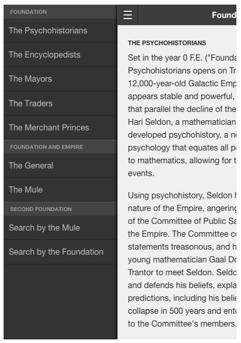
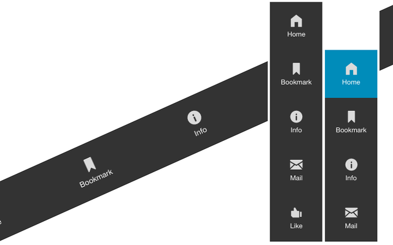
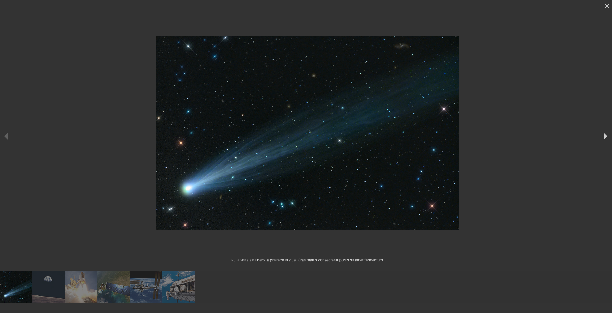
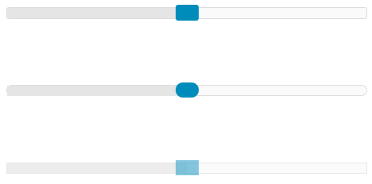
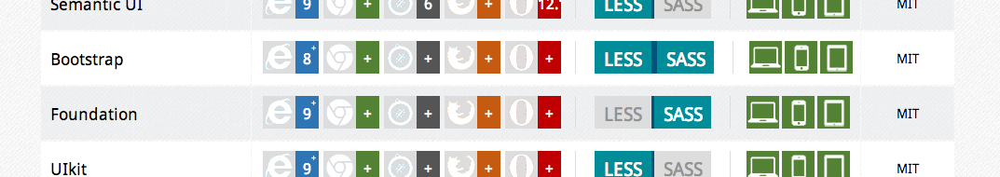

TechUP #15
Zurb Foundation all is responsive

- What is zurb?
- Mobile first / responsive Design
- Other frameworks
- How easy it is
- Counclusion
What is zurb?
The most advanced responsive front-end framework in the world.http://foundation.zurb.com/docs/
Zurb is ...
- ... a semantic framework
- ... mobile first
- ... responsive
- ... highly customizable
- ... sass friendly
- ... readable
Interchange


Off-Canvas

Icon-Bar

Lightbox


Range Sliders

... and much more
- Joyride
- Pricing Tables
- Equalizer
- Accordion & Tabs
- Abide Validation
Mobile first / responsive Design
- users are used to it
- users expect it
- users want it
What I have learned
- Use a framework whenever possible
- Try to achieve at least a personal coding guidline
- Know the limits of the framework
- Framework hopping? NO!
- Teach designers to stick to grids, existing elements. KISS
Choose the right tool and framework
Other Frameworks
Links
- http://bootstrapbay.com/blog/bootstrap-vs-foundation/
- http://ryanjafari.me/blog/2014/09/17/zurb-s-foundation-why-it-s-time-to-switch/
- http://responsivedesign.is/articles/screencast-zurb-foundation-for-apps
- https://github.com/zurb
- http://usablica.github.io/front-end-frameworks/compare.html
How easy it is!
Conclusion
- no holy grail
- use the best fit
- get productive
- stay flexible
- CMS vs Framework
- Say no to drugs